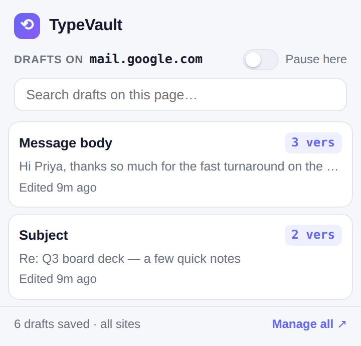
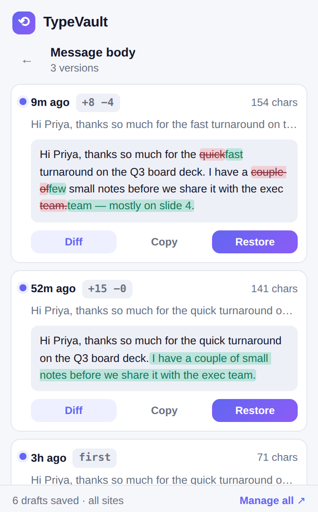

TypeVault quietly saves versioned snapshots of every field you type into — emails, forms, editors, comments. Clear a form or crash a tab, then scrub the timeline and restore any version. Nothing ever leaves your machine.
Free forever: last 24h & 5 versions per field on the current site · Pro is $12 once — no subscription, ever

TypeVault watches the fields you write in and snapshots them whenever the text meaningfully changes — so a cleared form, a crashed tab, or an accidental "select all + delete" is a non-event.
Every input, textarea and rich editor gets its own timeline of debounced snapshots — go back to the paragraph you deleted 20 minutes ago.
Compare any version to the one before it — additions in green, removals struck through — so you can find the exact wording you had.
Put a saved version back into the live field (React-safe), or copy it out if you've moved on to another page.
Everything lives in your browser's local storage. No account, no cloud, no analytics. Password fields are always ignored.
One searchable manager for your drafts across every site, grouped by origin, with per-site history.
Choose how many versions to keep, pause capturing on any site or everywhere, and export the whole vault as JSON.
Open a field's timeline to see every saved version with a timestamp and a word-level diff against the previous one. Restore the version you want, or copy it out — all without leaving the page.
Additions show in green, removals struck through. Free covers the current site's last 24 hours; Pro unlocks the full history and cross-site vault.

The free tier recovers what most people need. Pro is an impulse price, once.
No. Everything is saved in your browser's local storage (chrome.storage.local) and stays on your device. There are no servers, no accounts, and no analytics. Your drafts are never uploaded.
Never. TypeVault explicitly skips password fields, and it ignores very short scraps of text. It only snapshots real content you type into normal text fields, textareas and rich editors.
For inputs and textareas it re-injects through the native value setter and fires an input event, so even React/Vue-controlled fields notice the change. For rich (contenteditable) editors it sets the text and dispatches an input event. If the field is gone, TypeVault copies the version to your clipboard instead.
No. TypeVault keeps a capped number of versions per field (you choose), stores only meaningful changes, and prunes the least-recently-edited fields to stay well within Chrome's limits.
Yes. $12 once, all Pro features forever, every future update included. Payments are processed by Stripe via ExtensionPay; we never see your card details.